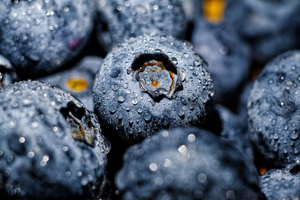
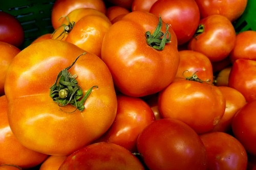
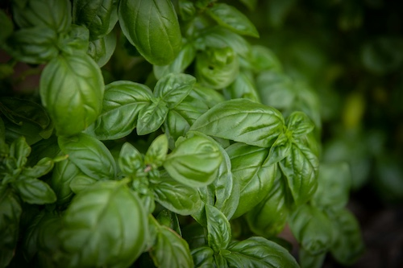

What's in Season?

Blueberries
From the Lily Farm, these berries are fat and sweet. Great with ice cream, or thrown them on your breakfast cereal!

Tomatoes
Beefsteak, Brandywine, SuperSauce, Yellow Pear, Cherry, Darkstar, and so many more choices!

Basil
Basil and tomatoes were made for each other. Or turn our huge bunches into pesto. Don't forget to freeze some!